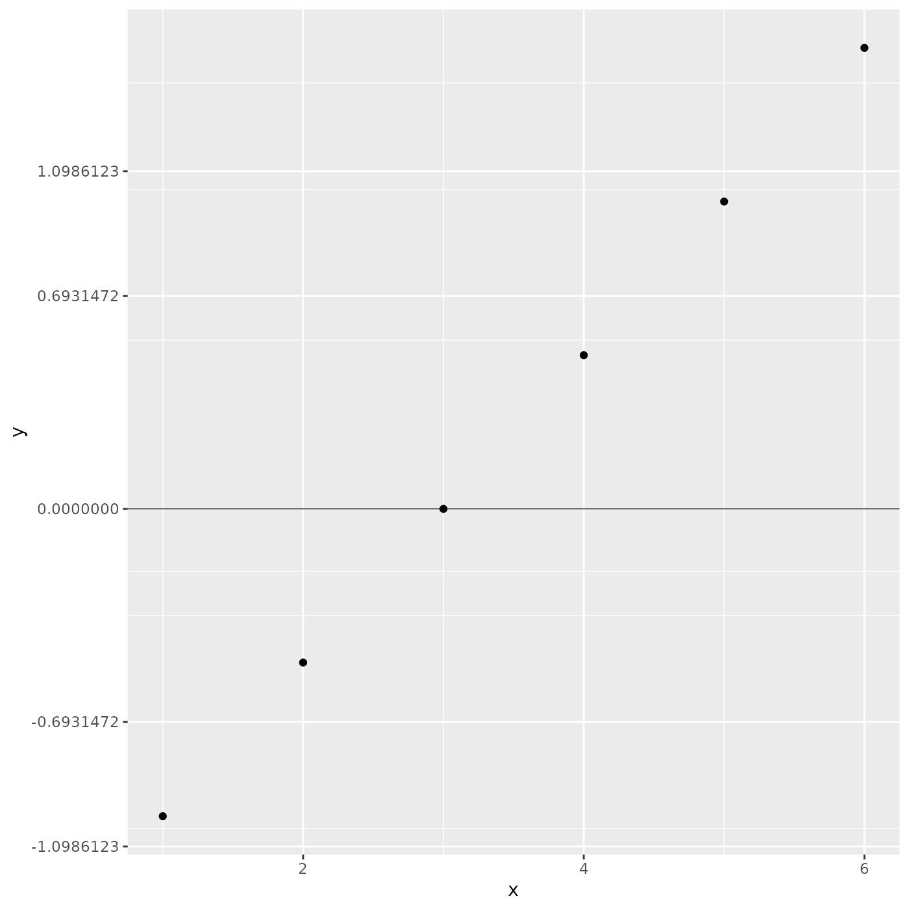

rat_breaks.RdFunction to compute tick marks evenly spaced on the log scale but with pretty numbers on the ratio scale
rat_breaks(base = exp(1), n = 5)Scalar, base of the logarithm in use (not implemented)
scalar, target number of breaks (not implemented)
Function to apply over a vector values to generate axis breaks
ggplot2::ggplot(data = data.frame(x= 1:6, y = seq(-1, 1.5, 0.5))
, ggplot2::aes(x, y))+
ggplot2::geom_point()+
ggplot2::scale_y_continuous(
, breaks = rat_breaks()
) +
ggplot2::geom_hline(yintercept = 0, size = 0.2)
#> Warning: Using `size` aesthetic for lines was deprecated in ggplot2 3.4.0.
#> ℹ Please use `linewidth` instead.
